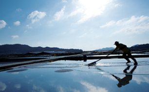
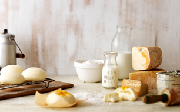

뚜레쥬르에서는 빵의 개성있는 식감을 잘 살려주는
베이커리전용 밀가루를 사용한 제품도
만나보실 수 있습니다. CJ제일제당 60년 제분기술을
노하우로 집결하여 만든 베이커리 전용 Only One
밀가루는 패스트리 전용밀가루, 식빵 전용밀가루 등
빵마다의 특성을 살리는 밀가루가 따로 있어 패스트리는
더욱 바삭하게, 식빵은 더욱 촉촉하고 쫄깃하게 만들어
줍니다.

소량의 소금까지도
신안 천일염
빵에 아주 조금 들어가지만 없어서는 안되는 중요한 재료
소금은 대한민국 명품갯벌이 만들어낸 천일염 CJ제일제당
‘오천년의 신비’를 사용합니다. 5,000년 동안의 시간이
만들어낸 생명력을 간직한 갯벌, 그 갯벌 위의 뜨거운
태양아래 필요한 시간만큼 충분히 두어 귀하게 얻고, 6단계
까다로운 공정을 거친 깨끗한 천일염 이라야 비로소
뚜레쥬르 빵에 사용될 수 있습니다.
*일부 제품, 매장별로 사용하는 소금이 상이할 수 있습니다.

맛을 더하는 재료도
순수한 자연재료, 순시리즈
뚜레쥬르 순시리즈는 빵의 맛을 더 풍부하게 하는 우유,
치즈, 채소, 과일등도 자연의 순수함을 그대로 간직한 재료들을 선별하여 사용합니다.
우유는 깨끗하고 건강한 환경에서 만들어 엄격한 기준을
통과한 유기농 우유를, 치즈는 꼭 필요한 것만을 첨가해
순리대로 만든 치즈를 넣어 빵의 맛을 더합니다.